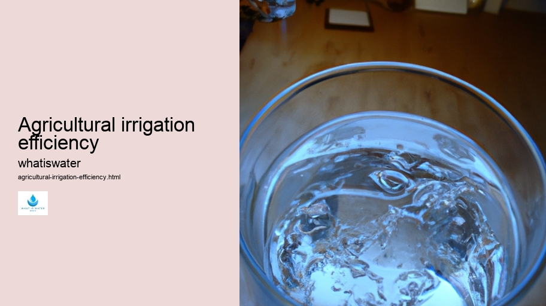

Hydrological Cycle
Hydrological Cycle
Evaporation and transpiration
Condensation and cloud formation
Precipitation and rain patterns
Surface runoff and river systems
Groundwater flow and aquifers
Snowmelt and glacial processes
Water storage in oceans lakes and reservoirs
Soil moisture and infiltration
Water balance and budgeting
Human impact on the hydrological cycle
Marine Ecosystems
Marine Ecosystems
Coral reefs and their biodiversity
Mangrove forests as coastal protectors
Ocean currents and climate regulation
Deepsea habitats and extremophiles
Intertidal zones and estuarine ecosystems
Marine food webs and trophic levels
Freshwater Ecosystems
Freshwater Ecosystems
Conservation efforts for marine species
Marine biogeochemical cycles
Impact of global warming on oceans
Water Resource Management
Water Resource Management
Rivers streams and creeks ecosystems
Lakes ponds wetlands habitats
Biodiversity in freshwater environments
Aquatic plants role in oxygenation
Freshwater fish species diversity
Invasive species impact on freshwater systems
Pollution threats to freshwater sources
Conservation strategies for freshwater biomes
Role of wetlands in flood control
Importance of riparian buffers
Cultural Significance of Water
Cultural Significance of Water
Sustainable water use practices
Desalination technologies for fresh water supply
Wastewater treatment processes
Rainwater harvesting techniques
Management of water during drought conditions
Transboundary water resource politics
Infrastructure for water distribution
Agricultural irrigation efficiency
Urban water demand management
Impact of climate change on water resources
About Us
Contact Us

Agricultural irrigation efficiency
Water Conflict
Agricultural irrigation efficiency encapsulates the judicious application and distribution of water to crops in a manner that maximizes yield while minimizing waste. As such, this concept stands as a critical component within the broader scope of sustainable agriculture practices. At its core, it involves optimizing every aspect of water usage from sourcing through delivery systems to plant uptake.
Water Conflict
The fundamental objective is quite straightforward: deliver water to where it's needed most effectively. However, implementing this straightforward goal can be surprisingly intricate. The challenge lies in balancing various factors that include climatic conditions, soil properties, crop types, and the ever-present economic constraints faced by farmers globally.
To begin with, one must consider the sources of irrigation water.
Waterborne Diseases
These might range from underground aquifers and rivers to collected rainwater or even recycled wastewater. Each source comes with its own set of benefits and limitations which must be carefully weighed against availability and sustainability concerns.
Once sourced, how water is delivered to crops significantly impacts efficiency. Traditional methods like flood or furrow irrigation may have lower setup costs but are often imprecise, leading to overwatering or runoff – both representing inefficiencies in terms of resource utilization and environmental impact.
Conversely, modern techniques such as drip or sprinkler systems offer more precise control over water dispersion directly targeting the root zone of plants.
Desalination
This precision dramatically enhances efficiency by reducing evaporation losses and decreasing the likelihood of nutrient leaching from excessive watering.
Moreover, technology plays an increasingly vital role in enhancing agricultural irrigation efficiency. Innovations like soil moisture sensors and weather-based controllers can automate watering schedules based on real-time data rather than relying solely on human judgment or fixed timetables.
Agricultural irrigation efficiency - Desalination
Waterborne Diseases
Desalination
Rain Gardens
Water Scarcity
These smart systems ensure plants receive exactly what they need when they need it without unnecessary excess.
Yet another dimension is ensuring that plant varieties are chosen for their suitability to local conditions including drought tolerance if applicable; this reduces dependence on extensive irrigation altogether.
Irrigation efficiency also requires ongoing maintenance efforts — clearing channels from obstructions preventing leaks in pipes or hoses will ensure that every drop intended for crop nourishment reaches its destination.
Ultimately improving agricultural irrigation efficiency isn't just about conserving water; it's also about maintaining soil health fostering resilient ecosystems providing nutritious food supplies adapting climate change mitigating pressures exerted upon freshwater resources globally all while supporting livelihoods dependent upon agriculture across continents thus presenting a multifaceted endeavor with profound implications for our planet's future well-being.
Hydrological Cycle
Check our other pages :
Importance of riparian buffers
Freshwater Ecosystems
Intertidal zones and estuarine ecosystems
Hydrological Cycle
Frequently Asked Questions
What is agricultural irrigation efficiency and why is it important?
Agricultural irrigation efficiency refers to the effectiveness of a system to deliver water to crops in a manner that maximizes productivity while minimizing waste. Its important because efficient irrigation conserves water, reduces energy consumption, saves money for farmers, and helps protect environmental resources.
How is irrigation efficiency measured?
Irrigation efficiency is typically measured by the ratio of the amount of water beneficially used by the crop to the total amount of water applied. This can be expressed as a percentage indicating how much water is effectively utilized for plant growth versus lost due to evaporation, runoff, or deep percolation.
Can improving agricultural irrigation efficiency impact global water scarcity issues?
Yes, since agriculture accounts for approximately 70% of freshwater withdrawals globally, improving its efficiency can significantly reduce overall water usage. Efficient use of agricultural water through improved irrigation practices can help alleviate pressure on freshwater resources and contribute to solving global water scarcity problems.
What role does technology play in enhancing agricultural irrigation efficiency?
Technology plays a crucial role by providing advanced tools and systems for monitoring soil moisture levels, weather patterns, and plant needs in real-time. Innovations such as automated smart irrigation systems, satellite imaging for precision farming, advanced sensors, and data analytics help farmers optimize their use of water resources more effectively than traditional methods alone would allow.